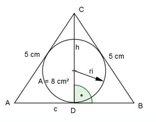
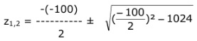
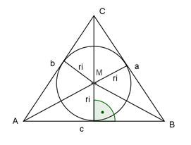

Aufgabe 54 Ein gleichschenkliges Dreieck hat eine Fläche von 8 cm2 und einen Schenkel von 5 cm. Wie groß ist sein Inkreisradius?  c * h A = ------- |*2 2 A * 2 = c * h |:c 2 * A ------- = h c 2 * 8 16 h = ------- = ---- c c Satz von Pythagoras im Dreieck ADC: c a2 = h2 + (---)2 2 16 c2 52 = (----)2 + ---- c 4 256 c2 25 = ----- + ---- |*4c2 c2 4 100c2 = 1024 + c4 |-100c2 c4 - 100c2 + 1024 = 0 Setze c2 = z z2 - 100z + 1024 = 0 p,q - Formel: p = -100 ; q = 1024  z1 = 50 + 38,4 = 88,4 z2 = 50 - 38,4 = 11,6 Rücksubstituiert: z1 = c1,22 c1,2 = √88,4 = ± 9,9 c1 = 9,9 cm c2 = - 9,9 keine Lösung, negative Länge z22 = c3,42 c3,4 = √11,6 = ± 3,4 c3 = 3,4 cm c4 = -3,4 keine Lösung, negative Länge  Das Dreieck ABC besteht aus 3 Teildreiecken ABM, BCM und AMC. c * ri Fläche von ABM = -------- 2 a * ri Fläche von BCM = -------- 2 b * ri Fläche von AMC = -------- 2 Fläche A von Dreieck ABC = c * ri a * ri b * ri -------- + -------- + -------- 2 2 2 Umfang U des Dreiecks = a + b + c U s = --- 2 ri U A = ---- *( a + b + c) = --- * ri = s * ri 2 2 A = s * ri |:s A ri = --- s U 2 * 5 cm + 9,9 cm s1 = --- = -------------------- = 9,95 cm 2 2 2 * 5 cm + 3,4 cm s2 = -------------------- = 6,7 cm 2 8 cm2 ri1 = ---------- = 0,8 cm 9,95 cm 8 cm2 ri2 = --------- = 1,2 cm 6,7 cm